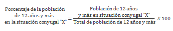

Población de 12 años y más para cada una de las situaciones conyugales, con relación al total de población de 12 años y más, expresada por cada cien.
Donde "X" se refiere a alguna de las siguientes situaciones conyugales:
Fuente:INEGI. Encuesta Intercensal 2015.
Nota:Los indicadores presentados son estimadores obtenidos a partir de la Encuesta Intercensal 2015.